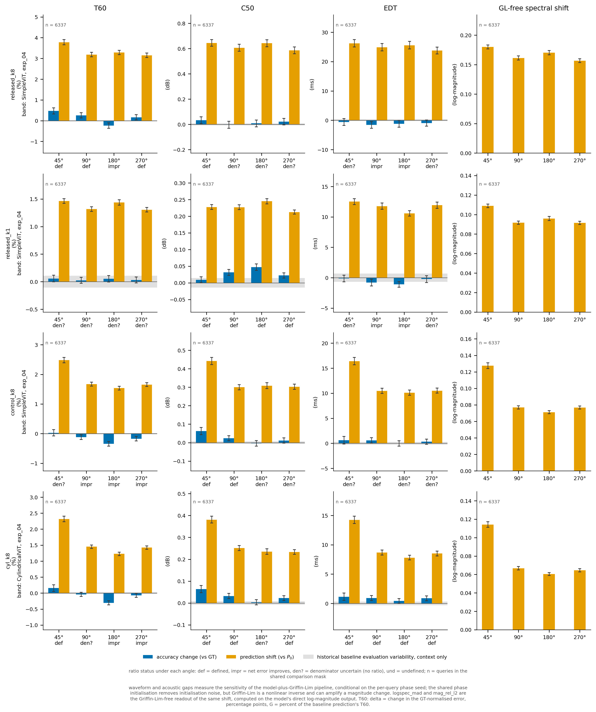
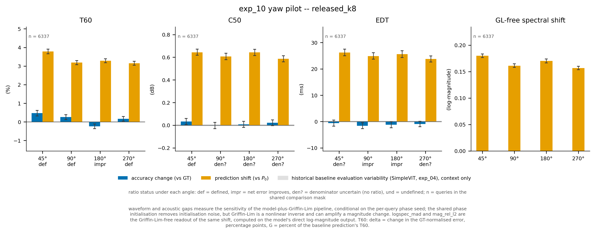
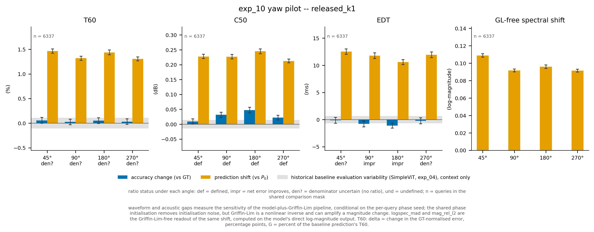
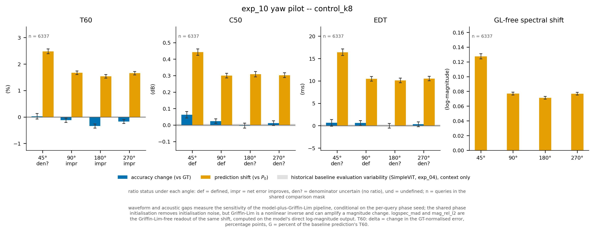
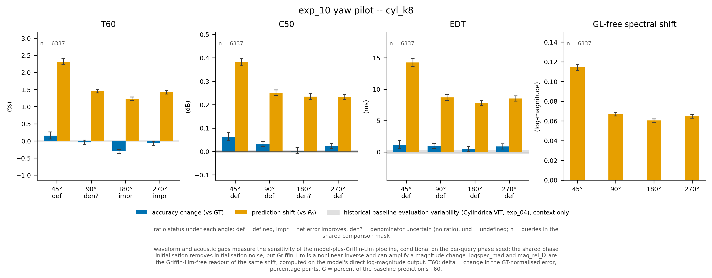

| metric | Δ (change in the error vs ground truth) | G (shift from the 0° prediction) |
|---|---|---|
| C50 | change in the C50 error against the ground truth, dB | C50 distance from the k = 0 prediction, dB |
| EDT | change in the EDT error against the ground truth, seconds | EDT distance from the k = 0 prediction, seconds |
| T60 | change in the GT-normalised error, percentage points | percent of the baseline prediction's T60 |
| T60_abs | change in |T60(prediction) - T60(GT)|, seconds | |T60(P_alpha) - T60(P_0)|, seconds |

| angle | mean at 0° | mean at α | Δ (query CI) | Δ (room CI) | G (query CI) | G (room CI) | n | status (query) | status (room) | multiple / reason |
|---|---|---|---|---|---|---|---|---|---|---|
| 45° | 55.1 | 54.6 | -0.585 [-1.77, 0.59] | -0.585 [-2.73, 1.7] | 26.2 [25, 27.5] | 26.2 [10.6, 43.7] | 6337 | denominator uncertain | denominator uncertain | denominator uncertain |
| 90° | 55.1 | 53.5 | -1.59 [-2.71, -0.472] | -1.59 [-3.3, 0.37] | 24.9 [23.7, 26.1] | 24.9 [8.79, 42.9] | 6337 | improvement | denominator uncertain | predictions shift while net error improves |
| 180° | 55.1 | 53.9 | -1.22 [-2.37, -0.0636] | -1.22 [-3.51, 0.529] | 25.6 [24.3, 26.9] | 25.6 [9.5, 43.5] | 6337 | improvement | denominator uncertain | predictions shift while net error improves |
| 270° | 55.1 | 54.2 | -0.937 [-1.97, 0.089] | -0.937 [-1.83, 0.0417] | 23.8 [22.6, 24.9] | 23.8 [9.01, 39.9] | 6337 | denominator uncertain | denominator uncertain | denominator uncertain |
| angle | mean at 0° | mean at α | Δ (query CI) | Δ (room CI) | G (query CI) | G (room CI) | n | status (query) | status (room) | multiple / reason |
|---|---|---|---|---|---|---|---|---|---|---|
| 45° | 1.36 | 1.39 | 0.0331 [0.00569, 0.0603] | 0.0331 [-0.00927, 0.0748] | 0.644 [0.618, 0.672] | 0.644 [0.283, 0.933] | 6337 | defined | denominator uncertain | 19.5× [10.3, 85] |
| 90° | 1.36 | 1.36 | -0.00277 [-0.0304, 0.0252] | -0.00277 [-0.03, 0.0194] | 0.606 [0.579, 0.635] | 0.606 [0.247, 0.923] | 6337 | denominator uncertain | denominator uncertain | denominator uncertain |
| 180° | 1.36 | 1.37 | 0.00845 [-0.0192, 0.0351] | 0.00845 [-0.0534, 0.0713] | 0.643 [0.614, 0.67] | 0.643 [0.264, 0.954] | 6337 | denominator uncertain | denominator uncertain | denominator uncertain |
| 270° | 1.36 | 1.38 | 0.0217 [-0.00338, 0.0469] | 0.0217 [-0.0345, 0.0833] | 0.586 [0.56, 0.613] | 0.586 [0.253, 0.866] | 6337 | denominator uncertain | denominator uncertain | denominator uncertain |
| angle | mean at 0° | mean at α | Δ (query CI) | Δ (room CI) | G (query CI) | G (room CI) | n | status (query) | status (room) | multiple / reason |
|---|---|---|---|---|---|---|---|---|---|---|
| 45° | 9.7 | 10.2 | 0.473 [0.324, 0.62] | 0.473 [0.0783, 0.825] | 3.78 [3.66, 3.91] | 3.78 [2.33, 5] | 6337 | defined | defined | 8× [6.13, 11.6] |
| 90° | 9.7 | 9.96 | 0.259 [0.131, 0.383] | 0.259 [-0.0909, 0.652] | 3.19 [3.08, 3.3] | 3.19 [1.98, 3.95] | 6337 | defined | denominator uncertain | 12.3× [8.31, 24.3] |
| 180° | 9.7 | 9.47 | -0.236 [-0.364, -0.108] | -0.236 [-0.61, 0.063] | 3.29 [3.18, 3.39] | 3.29 [1.99, 4.1] | 6337 | improvement | denominator uncertain | predictions shift while net error improves |
| 270° | 9.7 | 9.87 | 0.164 [0.0406, 0.292] | 0.164 [-0.084, 0.375] | 3.15 [3.04, 3.26] | 3.15 [1.97, 3.89] | 6337 | defined | denominator uncertain | 19.2× [10.6, 71.6] |
| angle | mean at 0° | mean at α | Δ (query CI) | Δ (room CI) | G (query CI) | G (room CI) | n | status (query) | status (room) | multiple / reason |
|---|---|---|---|---|---|---|---|---|---|---|
| 45° | 49.3 | 51.5 | 2.24 [1.46, 2.99] | 2.24 [0.149, 4.13] | 21.7 [21, 22.4] | 21.7 [12.1, 28.9] | 6337 | defined | defined | 9.7× [7.26, 14.8] |
| 90° | 49.3 | 50.4 | 1.11 [0.458, 1.75] | 1.11 [-0.444, 2.69] | 18.2 [17.5, 18.8] | 18.2 [9.95, 23.3] | 6337 | defined | denominator uncertain | 16.4× [10.4, 39.5] |
| 180° | 49.3 | 48.1 | -1.23 [-1.91, -0.563] | -1.23 [-2.99, 0.286] | 19 [18.4, 19.7] | 19 [10.3, 24.3] | 6337 | improvement | denominator uncertain | predictions shift while net error improves |
| 270° | 49.3 | 49.8 | 0.465 [-0.178, 1.11] | 0.465 [-0.685, 1.58] | 18 [17.4, 18.6] | 18 [10.3, 22.8] | 6337 | denominator uncertain | denominator uncertain | denominator uncertain |
| angle | mean at 0° | mean at α | Δ (query CI) | Δ (room CI) | G (query CI) | G (room CI) | n | status (query) | status (room) | multiple / reason |
|---|---|---|---|---|---|---|---|---|---|---|
| 45° | – | – | – | – | 0.18 [0.177, 0.183] | 0.18 [0.128, 0.228] | 6337 | undefined | undefined | no paired error for this metric |
| 90° | – | – | – | – | 0.161 [0.158, 0.165] | 0.161 [0.105, 0.215] | 6337 | undefined | undefined | no paired error for this metric |
| 180° | – | – | – | – | 0.17 [0.167, 0.174] | 0.17 [0.107, 0.223] | 6337 | undefined | undefined | no paired error for this metric |
| 270° | – | – | – | – | 0.157 [0.153, 0.16] | 0.157 [0.103, 0.205] | 6337 | undefined | undefined | no paired error for this metric |
| angle | mean at 0° | mean at α | Δ (query CI) | Δ (room CI) | G (query CI) | G (room CI) | n | status (query) | status (room) | multiple / reason |
|---|---|---|---|---|---|---|---|---|---|---|
| 45° | – | – | – | – | 0.234 [0.229, 0.239] | 0.234 [0.158, 0.302] | 6337 | undefined | undefined | no paired error for this metric |
| 90° | – | – | – | – | 0.208 [0.202, 0.213] | 0.208 [0.123, 0.286] | 6337 | undefined | undefined | no paired error for this metric |
| 180° | – | – | – | – | 0.22 [0.214, 0.226] | 0.22 [0.126, 0.299] | 6337 | undefined | undefined | no paired error for this metric |
| 270° | – | – | – | – | 0.201 [0.196, 0.206] | 0.201 [0.122, 0.267] | 6337 | undefined | undefined | no paired error for this metric |
| angle | mean at 0° | mean at α | Δ (query CI) | Δ (room CI) | G (query CI) | G (room CI) | n | status (query) | status (room) | multiple / reason |
|---|---|---|---|---|---|---|---|---|---|---|
| 45° | – | – | – | – | 0.877 [0.871, 0.884] | 0.877 [0.802, 0.941] | 6337 | undefined | undefined | no paired error for this metric |
| 90° | – | – | – | – | 0.824 [0.817, 0.831] | 0.824 [0.728, 0.906] | 6337 | undefined | undefined | no paired error for this metric |
| 180° | – | – | – | – | 0.834 [0.827, 0.842] | 0.834 [0.733, 0.931] | 6337 | undefined | undefined | no paired error for this metric |
| 270° | – | – | – | – | 0.816 [0.809, 0.823] | 0.816 [0.724, 0.904] | 6337 | undefined | undefined | no paired error for this metric |
| angle | mean at 0° | mean at α | Δ (query CI) | Δ (room CI) | G (query CI) | G (room CI) | n | status (query) | status (room) | multiple / reason |
|---|---|---|---|---|---|---|---|---|---|---|
| 45° | – | – | – | – | 0.000933 [0.000913, 0.000953] | 0.000933 [0.000656, 0.00143] | 6337 | undefined | undefined | no paired error for this metric |
| 90° | – | – | – | – | 0.000853 [0.000835, 0.000871] | 0.000853 [0.000602, 0.00129] | 6337 | undefined | undefined | no paired error for this metric |
| 180° | – | – | – | – | 0.000862 [0.000844, 0.000881] | 0.000862 [0.000607, 0.00131] | 6337 | undefined | undefined | no paired error for this metric |
| 270° | – | – | – | – | 0.000849 [0.000831, 0.000867] | 0.000849 [0.000594, 0.00129] | 6337 | undefined | undefined | no paired error for this metric |
| angle | mean at 0° | mean at α | Δ (query CI) | Δ (room CI) | G (query CI) | G (room CI) | n | status (query) | status (room) | multiple / reason |
|---|---|---|---|---|---|---|---|---|---|---|
| 45° | 0.439 | 0.437 | -0.00186 [-0.00548, 0.00183] | -0.00186 [-0.00611, 0.00258] | – | – | 6337 | undefined | undefined | no prediction shift is defined for this metric |
| 90° | 0.439 | 0.44 | 0.000852 [-0.00286, 0.00455] | 0.000852 [-0.00784, 0.00961] | – | – | 6337 | undefined | undefined | no prediction shift is defined for this metric |
| 180° | 0.439 | 0.447 | 0.00835 [0.00395, 0.0129] | 0.00835 [-0.00147, 0.0172] | – | – | 6337 | undefined | undefined | no prediction shift is defined for this metric |
| 270° | 0.439 | 0.445 | 0.00618 [0.00243, 0.00984] | 0.00618 [-0.00195, 0.0126] | – | – | 6337 | undefined | undefined | no prediction shift is defined for this metric |
| angle | mean at 0° | mean at α | Δ (query CI) | Δ (room CI) | G (query CI) | G (room CI) | n | status (query) | status (room) | multiple / reason |
|---|---|---|---|---|---|---|---|---|---|---|
| 45° | 0.017 | 0.0175 | 0.000494 [0.000341, 0.00064] | 0.000494 [0.000188, 0.000838] | – | – | 6337 | undefined | undefined | no prediction shift is defined for this metric |
| 90° | 0.017 | 0.017 | 5.67e-05 [-8.21e-05, 0.000192] | 5.67e-05 [-6.54e-05, 0.000155] | – | – | 6337 | undefined | undefined | no prediction shift is defined for this metric |
| 180° | 0.017 | 0.0169 | -0.000109 [-0.000246, 2.74e-05] | -0.000109 [-0.000336, 9.57e-05] | – | – | 6337 | undefined | undefined | no prediction shift is defined for this metric |
| 270° | 0.017 | 0.017 | -4.06e-06 [-0.000142, 0.000131] | -4.06e-06 [-0.000201, 0.0002] | – | – | 6337 | undefined | undefined | no prediction shift is defined for this metric |
| control | k | max |Δ wave| | max |Δ log-spec| | ok |
|---|---|---|---|---|
| ctrl_full_turn | 512 | 0 | 0 | ok |
| ctrl_k128_repeat | 128 | 0 | 0 | ok |
| ctrl_zero_repeat | 0 | 0 | 0 | ok |
| angle | metric | max |Δ| | within tol. | paired Δ (run) | paired Δ (exp_03) | status |
|---|---|---|---|---|---|---|
| 0° | edt_err | 0 | 1 | 0 | 0 | replication |
| 0° | c50_err | 0 | 1 | 0 | 0 | replication |
| 0° | t60_err | 0 | 1 | 0 | 0 | replication |
| 0° | logspec_mad | 0 | 1 | 0 | 0 | replication |
| 45° | edt_err | 0 | 1 | -0.0005848 | -0.0005848 | replication |
| 45° | c50_err | 0 | 1 | 0.03309 | 0.03309 | replication |
| 45° | t60_err | 0 | 1 | 0.4729 | 0.4729 | replication |
| 45° | logspec_mad | 1.3e-07 | 1 | 0.18 | 0.18 | replication |
| 90° | edt_err | 0 | 1 | -0.00159 | -0.00159 | replication |
| 90° | c50_err | 0 | 1 | -0.002775 | -0.002775 | replication |
| 90° | t60_err | 0 | 1 | 0.2591 | 0.2591 | replication |
| 90° | logspec_mad | 1.3e-07 | 1 | 0.1612 | 0.1612 | replication |
| 180° | edt_err | 0 | 1 | -0.001222 | -0.001222 | replication |
| 180° | c50_err | 0 | 1 | 0.008447 | 0.008447 | replication |
| 180° | t60_err | 0 | 1 | -0.2355 | -0.2355 | replication |
| 180° | logspec_mad | 1.5e-07 | 1 | 0.1702 | 0.1702 | replication |
| 270° | edt_err | 0 | 1 | -0.0009373 | -0.0009373 | replication |
| 270° | c50_err | 0 | 1 | 0.02167 | 0.02167 | replication |
| 270° | t60_err | 0 | 1 | 0.1643 | 0.1643 | replication |
| 270° | logspec_mad | 1.5e-07 | 1 | 0.1567 | 0.1567 | replication |

| angle | mean at 0° | mean at α | Δ (query CI) | Δ (room CI) | G (query CI) | G (room CI) | n | status (query) | status (room) | multiple / reason |
|---|---|---|---|---|---|---|---|---|---|---|
| 45° | 84 | 83.9 | -0.124 [-0.677, 0.409] | -0.124 [-1.17, 0.851] | 12.5 [12, 13] | 12.5 [6.03, 18.9] | 6337 | denominator uncertain | denominator uncertain | denominator uncertain |
| 90° | 84 | 83.2 | -0.786 [-1.34, -0.244] | -0.786 [-2.55, 0.614] | 11.8 [11.3, 12.3] | 11.8 [4.87, 19.2] | 6337 | improvement | denominator uncertain | predictions shift while net error improves |
| 180° | 84 | 82.9 | -1.1 [-1.57, -0.637] | -1.1 [-1.76, -0.244] | 10.6 [10.1, 11] | 10.6 [5.36, 15.4] | 6337 | improvement | improvement | predictions shift while net error improves |
| 270° | 84 | 83.8 | -0.217 [-0.782, 0.338] | -0.217 [-1.43, 0.73] | 11.9 [11.4, 12.4] | 11.9 [4.99, 19.2] | 6337 | denominator uncertain | denominator uncertain | denominator uncertain |
| angle | mean at 0° | mean at α | Δ (query CI) | Δ (room CI) | G (query CI) | G (room CI) | n | status (query) | status (room) | multiple / reason |
|---|---|---|---|---|---|---|---|---|---|---|
| 45° | 2.08 | 2.09 | 0.0092 [0.000433, 0.0178] | 0.0092 [-0.00215, 0.0188] | 0.228 [0.221, 0.235] | 0.228 [0.126, 0.311] | 6337 | defined | denominator uncertain | 24.7× [11.2, 136] |
| 90° | 2.08 | 2.12 | 0.0315 [0.0225, 0.0403] | 0.0315 [-0.00518, 0.0758] | 0.227 [0.22, 0.234] | 0.227 [0.118, 0.318] | 6337 | defined | denominator uncertain | 7.21× [5.65, 10] |
| 180° | 2.08 | 2.13 | 0.0471 [0.0374, 0.0568] | 0.0471 [-0.00169, 0.116] | 0.245 [0.237, 0.253] | 0.245 [0.133, 0.345] | 6337 | defined | denominator uncertain | 5.2× [4.36, 6.48] |
| 270° | 2.08 | 2.11 | 0.0221 [0.0144, 0.0299] | 0.0221 [-0.0147, 0.0671] | 0.213 [0.207, 0.219] | 0.213 [0.115, 0.293] | 6337 | defined | denominator uncertain | 9.6× [7.12, 14.8] |
| angle | mean at 0° | mean at α | Δ (query CI) | Δ (room CI) | G (query CI) | G (room CI) | n | status (query) | status (room) | multiple / reason |
|---|---|---|---|---|---|---|---|---|---|---|
| 45° | 13.8 | 13.9 | 0.0551 [-0.00341, 0.116] | 0.0551 [-0.0403, 0.132] | 1.46 [1.42, 1.51] | 1.46 [1.06, 1.75] | 6337 | denominator uncertain | denominator uncertain | denominator uncertain |
| 90° | 13.8 | 13.8 | 0.0245 [-0.0298, 0.08] | 0.0245 [-0.0532, 0.111] | 1.32 [1.28, 1.36] | 1.32 [0.868, 1.7] | 6337 | denominator uncertain | denominator uncertain | denominator uncertain |
| 180° | 13.8 | 13.8 | 0.0522 [-0.00541, 0.11] | 0.0522 [-0.0626, 0.197] | 1.44 [1.39, 1.49] | 1.44 [0.916, 1.98] | 6337 | denominator uncertain | denominator uncertain | denominator uncertain |
| 270° | 13.8 | 13.8 | 0.0311 [-0.0226, 0.0862] | 0.0311 [-0.0224, 0.087] | 1.31 [1.27, 1.35] | 1.31 [0.896, 1.64] | 6337 | denominator uncertain | denominator uncertain | denominator uncertain |
| angle | mean at 0° | mean at α | Δ (query CI) | Δ (room CI) | G (query CI) | G (room CI) | n | status (query) | status (room) | multiple / reason |
|---|---|---|---|---|---|---|---|---|---|---|
| 45° | 67.8 | 68.1 | 0.331 [0.0154, 0.651] | 0.331 [-0.22, 0.776] | 8.39 [8.13, 8.66] | 8.39 [5.51, 10.2] | 6337 | defined | denominator uncertain | 25.3× [11.4, 149] |
| 90° | 67.8 | 67.9 | 0.117 [-0.173, 0.414] | 0.117 [-0.25, 0.567] | 7.54 [7.28, 7.8] | 7.54 [4.23, 9.87] | 6337 | denominator uncertain | denominator uncertain | denominator uncertain |
| 180° | 67.8 | 68.1 | 0.291 [-0.0254, 0.607] | 0.291 [-0.309, 1.08] | 8.13 [7.84, 8.42] | 8.13 [4.59, 11.1] | 6337 | denominator uncertain | denominator uncertain | denominator uncertain |
| 270° | 67.8 | 67.9 | 0.117 [-0.172, 0.412] | 0.117 [-0.0954, 0.311] | 7.39 [7.15, 7.64] | 7.39 [4.39, 9.49] | 6337 | denominator uncertain | denominator uncertain | denominator uncertain |
| angle | mean at 0° | mean at α | Δ (query CI) | Δ (room CI) | G (query CI) | G (room CI) | n | status (query) | status (room) | multiple / reason |
|---|---|---|---|---|---|---|---|---|---|---|
| 45° | – | – | – | – | 0.109 [0.107, 0.111] | 0.109 [0.075, 0.135] | 6337 | undefined | undefined | no paired error for this metric |
| 90° | – | – | – | – | 0.0917 [0.0901, 0.0934] | 0.0917 [0.0608, 0.118] | 6337 | undefined | undefined | no paired error for this metric |
| 180° | – | – | – | – | 0.0959 [0.0938, 0.0981] | 0.0959 [0.0609, 0.128] | 6337 | undefined | undefined | no paired error for this metric |
| 270° | – | – | – | – | 0.0914 [0.0898, 0.0931] | 0.0914 [0.0603, 0.118] | 6337 | undefined | undefined | no paired error for this metric |
| angle | mean at 0° | mean at α | Δ (query CI) | Δ (room CI) | G (query CI) | G (room CI) | n | status (query) | status (room) | multiple / reason |
|---|---|---|---|---|---|---|---|---|---|---|
| 45° | – | – | – | – | 0.0828 [0.081, 0.0847] | 0.0828 [0.0512, 0.108] | 6337 | undefined | undefined | no paired error for this metric |
| 90° | – | – | – | – | 0.0652 [0.0635, 0.0669] | 0.0652 [0.0349, 0.0908] | 6337 | undefined | undefined | no paired error for this metric |
| 180° | – | – | – | – | 0.0739 [0.0713, 0.0766] | 0.0739 [0.0361, 0.114] | 6337 | undefined | undefined | no paired error for this metric |
| 270° | – | – | – | – | 0.0651 [0.0635, 0.0669] | 0.0651 [0.0344, 0.0927] | 6337 | undefined | undefined | no paired error for this metric |
| angle | mean at 0° | mean at α | Δ (query CI) | Δ (room CI) | G (query CI) | G (room CI) | n | status (query) | status (room) | multiple / reason |
|---|---|---|---|---|---|---|---|---|---|---|
| 45° | – | – | – | – | 0.331 [0.328, 0.334] | 0.331 [0.286, 0.369] | 6337 | undefined | undefined | no paired error for this metric |
| 90° | – | – | – | – | 0.309 [0.305, 0.312] | 0.309 [0.258, 0.355] | 6337 | undefined | undefined | no paired error for this metric |
| 180° | – | – | – | – | 0.33 [0.325, 0.334] | 0.33 [0.27, 0.396] | 6337 | undefined | undefined | no paired error for this metric |
| 270° | – | – | – | – | 0.311 [0.307, 0.314] | 0.311 [0.26, 0.36] | 6337 | undefined | undefined | no paired error for this metric |
| angle | mean at 0° | mean at α | Δ (query CI) | Δ (room CI) | G (query CI) | G (room CI) | n | status (query) | status (room) | multiple / reason |
|---|---|---|---|---|---|---|---|---|---|---|
| 45° | – | – | – | – | 0.000376 [0.000368, 0.000384] | 0.000376 [0.00028, 0.000545] | 6337 | undefined | undefined | no paired error for this metric |
| 90° | – | – | – | – | 0.000347 [0.00034, 0.000355] | 0.000347 [0.000258, 0.000498] | 6337 | undefined | undefined | no paired error for this metric |
| 180° | – | – | – | – | 0.000365 [0.000357, 0.000372] | 0.000365 [0.00027, 0.000517] | 6337 | undefined | undefined | no paired error for this metric |
| 270° | – | – | – | – | 0.000348 [0.000341, 0.000355] | 0.000348 [0.000258, 0.0005] | 6337 | undefined | undefined | no paired error for this metric |
| angle | mean at 0° | mean at α | Δ (query CI) | Δ (room CI) | G (query CI) | G (room CI) | n | status (query) | status (room) | multiple / reason |
|---|---|---|---|---|---|---|---|---|---|---|
| 45° | 0.809 | 0.81 | 0.000923 [-0.00211, 0.00396] | 0.000923 [-0.00321, 0.00445] | – | – | 6337 | undefined | undefined | no prediction shift is defined for this metric |
| 90° | 0.809 | 0.811 | 0.00122 [-0.00159, 0.00402] | 0.00122 [-0.00701, 0.00746] | – | – | 6337 | undefined | undefined | no prediction shift is defined for this metric |
| 180° | 0.809 | 0.817 | 0.00749 [0.00459, 0.0104] | 0.00749 [-0.00518, 0.0246] | – | – | 6337 | undefined | undefined | no prediction shift is defined for this metric |
| 270° | 0.809 | 0.815 | 0.00583 [0.00346, 0.00826] | 0.00583 [-0.00614, 0.0159] | – | – | 6337 | undefined | undefined | no prediction shift is defined for this metric |
| angle | mean at 0° | mean at α | Δ (query CI) | Δ (room CI) | G (query CI) | G (room CI) | n | status (query) | status (room) | multiple / reason |
|---|---|---|---|---|---|---|---|---|---|---|
| 45° | 0.0254 | 0.0254 | 3.56e-05 [-2.48e-05, 9.44e-05] | 3.56e-05 [-6.01e-05, 0.000139] | – | – | 6337 | undefined | undefined | no prediction shift is defined for this metric |
| 90° | 0.0254 | 0.0254 | 7.34e-05 [2.18e-05, 0.000126] | 7.34e-05 [-7.62e-05, 0.000266] | – | – | 6337 | undefined | undefined | no prediction shift is defined for this metric |
| 180° | 0.0254 | 0.0254 | 2.47e-05 [-2.73e-05, 7.72e-05] | 2.47e-05 [-0.000111, 0.000196] | – | – | 6337 | undefined | undefined | no prediction shift is defined for this metric |
| 270° | 0.0254 | 0.0255 | 0.000124 [7.21e-05, 0.000175] | 0.000124 [-5.61e-05, 0.000357] | – | – | 6337 | undefined | undefined | no prediction shift is defined for this metric |
| control | k | max |Δ wave| | max |Δ log-spec| | ok |
|---|---|---|---|---|
| ctrl_full_turn | 512 | 0 | 0 | ok |
| ctrl_k128_repeat | 128 | 0 | 0 | ok |
| ctrl_zero_repeat | 0 | 0 | 0 | ok |

| angle | mean at 0° | mean at α | Δ (query CI) | Δ (room CI) | G (query CI) | G (room CI) | n | status (query) | status (room) | multiple / reason |
|---|---|---|---|---|---|---|---|---|---|---|
| 45° | 47 | 47.6 | 0.63 [-0.117, 1.36] | 0.63 [-0.129, 1.49] | 16.4 [15.7, 17.1] | 16.4 [5.51, 27.5] | 6337 | denominator uncertain | denominator uncertain | denominator uncertain |
| 90° | 47 | 47.6 | 0.588 [0.0527, 1.1] | 0.588 [-0.277, 1.28] | 10.5 [9.95, 11] | 10.5 [4.42, 16.5] | 6337 | defined | denominator uncertain | 17.8× [8.81, 95.3] |
| 180° | 47 | 47 | -0.0271 [-0.555, 0.501] | -0.0271 [-0.866, 0.521] | 10.1 [9.61, 10.6] | 10.1 [4.14, 15.5] | 6337 | denominator uncertain | denominator uncertain | denominator uncertain |
| 270° | 47 | 47.3 | 0.317 [-0.208, 0.844] | 0.317 [-0.611, 1.1] | 10.5 [10, 11] | 10.5 [4.57, 16.4] | 6337 | denominator uncertain | denominator uncertain | denominator uncertain |
| angle | mean at 0° | mean at α | Δ (query CI) | Δ (room CI) | G (query CI) | G (room CI) | n | status (query) | status (room) | multiple / reason |
|---|---|---|---|---|---|---|---|---|---|---|
| 45° | 1.24 | 1.3 | 0.0629 [0.0434, 0.0816] | 0.0629 [0.00927, 0.13] | 0.442 [0.423, 0.462] | 0.442 [0.154, 0.683] | 6337 | defined | defined | 7.03× [5.43, 10.2] |
| 90° | 1.24 | 1.26 | 0.024 [0.0104, 0.0374] | 0.024 [-0.014, 0.0679] | 0.3 [0.286, 0.314] | 0.3 [0.12, 0.452] | 6337 | defined | denominator uncertain | 12.5× [8.01, 28.8] |
| 180° | 1.24 | 1.23 | -0.00334 [-0.0188, 0.0116] | -0.00334 [-0.0384, 0.0309] | 0.308 [0.293, 0.325] | 0.308 [0.114, 0.479] | 6337 | denominator uncertain | denominator uncertain | denominator uncertain |
| 270° | 1.24 | 1.25 | 0.0116 [-0.00284, 0.0262] | 0.0116 [-0.0164, 0.0462] | 0.302 [0.288, 0.317] | 0.302 [0.124, 0.452] | 6337 | denominator uncertain | denominator uncertain | denominator uncertain |
| angle | mean at 0° | mean at α | Δ (query CI) | Δ (room CI) | G (query CI) | G (room CI) | n | status (query) | status (room) | multiple / reason |
|---|---|---|---|---|---|---|---|---|---|---|
| 45° | 9.56 | 9.59 | 0.0278 [-0.0766, 0.132] | 0.0278 [-0.23, 0.291] | 2.48 [2.39, 2.57] | 2.48 [1.41, 3.19] | 6337 | denominator uncertain | denominator uncertain | denominator uncertain |
| 90° | 9.56 | 9.44 | -0.12 [-0.201, -0.0395] | -0.12 [-0.303, 0.032] | 1.67 [1.6, 1.74] | 1.67 [1.02, 2.21] | 6337 | improvement | denominator uncertain | predictions shift while net error improves |
| 180° | 9.56 | 9.22 | -0.341 [-0.421, -0.263] | -0.341 [-0.736, -0.0633] | 1.54 [1.47, 1.6] | 1.54 [0.871, 2.11] | 6337 | improvement | improvement | predictions shift while net error improves |
| 270° | 9.56 | 9.39 | -0.171 [-0.246, -0.0976] | -0.171 [-0.375, -0.00568] | 1.66 [1.59, 1.72] | 1.66 [1.05, 2.11] | 6337 | improvement | improvement | predictions shift while net error improves |
| angle | mean at 0° | mean at α | Δ (query CI) | Δ (room CI) | G (query CI) | G (room CI) | n | status (query) | status (room) | multiple / reason |
|---|---|---|---|---|---|---|---|---|---|---|
| 45° | 48.7 | 48.8 | 0.0658 [-0.503, 0.629] | 0.0658 [-1.37, 1.48] | 14.6 [14.1, 15.2] | 14.6 [7.4, 19.7] | 6337 | undefined | denominator uncertain | unresolved Monte Carlo uncertainty |
| 90° | 48.7 | 48.1 | -0.579 [-0.991, -0.175] | -0.579 [-1.52, 0.242] | 9.64 [9.26, 10] | 9.64 [5.41, 12.9] | 6337 | improvement | denominator uncertain | predictions shift while net error improves |
| 180° | 48.7 | 46.9 | -1.76 [-2.18, -1.35] | -1.76 [-3.86, -0.315] | 8.92 [8.54, 9.31] | 8.92 [4.7, 12.3] | 6337 | improvement | improvement | predictions shift while net error improves |
| 270° | 48.7 | 47.8 | -0.907 [-1.31, -0.497] | -0.907 [-2.01, -0.0285] | 9.59 [9.23, 9.95] | 9.59 [5.62, 12.4] | 6337 | improvement | improvement | predictions shift while net error improves |
| angle | mean at 0° | mean at α | Δ (query CI) | Δ (room CI) | G (query CI) | G (room CI) | n | status (query) | status (room) | multiple / reason |
|---|---|---|---|---|---|---|---|---|---|---|
| 45° | – | – | – | – | 0.127 [0.124, 0.131] | 0.127 [0.0611, 0.189] | 6337 | undefined | undefined | no paired error for this metric |
| 90° | – | – | – | – | 0.0769 [0.0751, 0.0788] | 0.0769 [0.0446, 0.106] | 6337 | undefined | undefined | no paired error for this metric |
| 180° | – | – | – | – | 0.0712 [0.0694, 0.073] | 0.0712 [0.0388, 0.0986] | 6337 | undefined | undefined | no paired error for this metric |
| 270° | – | – | – | – | 0.0768 [0.0749, 0.0787] | 0.0768 [0.045, 0.106] | 6337 | undefined | undefined | no paired error for this metric |
| angle | mean at 0° | mean at α | Δ (query CI) | Δ (room CI) | G (query CI) | G (room CI) | n | status (query) | status (room) | multiple / reason |
|---|---|---|---|---|---|---|---|---|---|---|
| 45° | – | – | – | – | 0.165 [0.161, 0.169] | 0.165 [0.0754, 0.241] | 6337 | undefined | undefined | no paired error for this metric |
| 90° | – | – | – | – | 0.104 [0.101, 0.107] | 0.104 [0.0539, 0.147] | 6337 | undefined | undefined | no paired error for this metric |
| 180° | – | – | – | – | 0.0989 [0.096, 0.102] | 0.0989 [0.0484, 0.142] | 6337 | undefined | undefined | no paired error for this metric |
| 270° | – | – | – | – | 0.104 [0.101, 0.107] | 0.104 [0.0548, 0.145] | 6337 | undefined | undefined | no paired error for this metric |
| angle | mean at 0° | mean at α | Δ (query CI) | Δ (room CI) | G (query CI) | G (room CI) | n | status (query) | status (room) | multiple / reason |
|---|---|---|---|---|---|---|---|---|---|---|
| 45° | – | – | – | – | 0.736 [0.729, 0.744] | 0.736 [0.585, 0.861] | 6337 | undefined | undefined | no paired error for this metric |
| 90° | – | – | – | – | 0.617 [0.611, 0.624] | 0.617 [0.504, 0.718] | 6337 | undefined | undefined | no paired error for this metric |
| 180° | – | – | – | – | 0.584 [0.578, 0.591] | 0.584 [0.465, 0.696] | 6337 | undefined | undefined | no paired error for this metric |
| 270° | – | – | – | – | 0.618 [0.611, 0.624] | 0.618 [0.51, 0.715] | 6337 | undefined | undefined | no paired error for this metric |
| angle | mean at 0° | mean at α | Δ (query CI) | Δ (room CI) | G (query CI) | G (room CI) | n | status (query) | status (room) | multiple / reason |
|---|---|---|---|---|---|---|---|---|---|---|
| 45° | – | – | – | – | 0.000709 [0.000695, 0.000724] | 0.000709 [0.000541, 0.00103] | 6337 | undefined | undefined | no paired error for this metric |
| 90° | – | – | – | – | 0.000598 [0.000586, 0.00061] | 0.000598 [0.000443, 0.000876] | 6337 | undefined | undefined | no paired error for this metric |
| 180° | – | – | – | – | 0.000547 [0.000536, 0.000558] | 0.000547 [0.000409, 0.000791] | 6337 | undefined | undefined | no paired error for this metric |
| 270° | – | – | – | – | 0.000606 [0.000593, 0.000618] | 0.000606 [0.000446, 0.000892] | 6337 | undefined | undefined | no paired error for this metric |
| angle | mean at 0° | mean at α | Δ (query CI) | Δ (room CI) | G (query CI) | G (room CI) | n | status (query) | status (room) | multiple / reason |
|---|---|---|---|---|---|---|---|---|---|---|
| 45° | 0.422 | 0.424 | 0.00201 [-0.00167, 0.00564] | 0.00201 [-0.00036, 0.00446] | – | – | 6337 | undefined | undefined | no prediction shift is defined for this metric |
| 90° | 0.422 | 0.424 | 0.00138 [-0.00038, 0.00313] | 0.00138 [-0.00352, 0.00627] | – | – | 6337 | undefined | undefined | no prediction shift is defined for this metric |
| 180° | 0.422 | 0.42 | -0.00195 [-0.00364, -0.000298] | -0.00195 [-0.00687, 0.00336] | – | – | 6337 | undefined | undefined | no prediction shift is defined for this metric |
| 270° | 0.422 | 0.424 | 0.00165 [-0.000239, 0.0036] | 0.00165 [-0.00163, 0.00408] | – | – | 6337 | undefined | undefined | no prediction shift is defined for this metric |
| angle | mean at 0° | mean at α | Δ (query CI) | Δ (room CI) | G (query CI) | G (room CI) | n | status (query) | status (room) | multiple / reason |
|---|---|---|---|---|---|---|---|---|---|---|
| 45° | 0.0161 | 0.0165 | 0.000345 [0.000239, 0.000452] | 0.000345 [0.000153, 0.00054] | – | – | 6337 | undefined | undefined | no prediction shift is defined for this metric |
| 90° | 0.0161 | 0.0162 | 7.8e-05 [-4.26e-06, 0.000159] | 7.8e-05 [-8.99e-05, 0.000207] | – | – | 6337 | undefined | undefined | no prediction shift is defined for this metric |
| 180° | 0.0161 | 0.0161 | -2.67e-05 [-0.000114, 6.03e-05] | -2.67e-05 [-0.000246, 0.000119] | – | – | 6337 | undefined | undefined | no prediction shift is defined for this metric |
| 270° | 0.0161 | 0.0162 | 5.74e-05 [-3.2e-05, 0.000145] | 5.74e-05 [-0.000141, 0.000172] | – | – | 6337 | undefined | undefined | no prediction shift is defined for this metric |
| control | k | max |Δ wave| | max |Δ log-spec| | ok |
|---|---|---|---|---|
| ctrl_full_turn | 512 | 0 | 0 | ok |
| ctrl_k128_repeat | 128 | 0 | 0 | ok |
| ctrl_zero_repeat | 0 | 0 | 0 | ok |
| angle | metric | max |Δ| | within tol. | paired Δ (run) | paired Δ (exp_03) | status |
|---|---|---|---|---|---|---|
| 0° | edt_err | 0 | 1 | 0 | 0 | replication |
| 0° | c50_err | 0 | 1 | 0 | 0 | replication |
| 0° | t60_err | 0 | 1 | 0 | 0 | replication |
| 0° | logspec_mad | 0 | 1 | 0 | 0 | replication |
| 45° | edt_err | 0 | 1 | 0.0006304 | 0.0006304 | replication |
| 45° | c50_err | 0 | 1 | 0.06288 | 0.06288 | replication |
| 45° | t60_err | 0 | 1 | 0.02785 | 0.02785 | replication |
| 45° | logspec_mad | 1.4e-07 | 1 | 0.1274 | 0.1274 | replication |
| 90° | edt_err | 0 | 1 | 0.0005878 | 0.0005878 | replication |
| 90° | c50_err | 0 | 1 | 0.02404 | 0.02404 | replication |
| 90° | t60_err | 0 | 1 | -0.1195 | -0.1195 | replication |
| 90° | logspec_mad | 1.2e-07 | 1 | 0.07693 | 0.07693 | replication |
| 180° | edt_err | 0 | 1 | -2.709e-05 | -2.709e-05 | replication |
| 180° | c50_err | 0 | 1 | -0.003344 | -0.003344 | replication |
| 180° | t60_err | 0 | 1 | -0.3412 | -0.3412 | replication |
| 180° | logspec_mad | 6.2e-08 | 1 | 0.07116 | 0.07116 | replication |
| 270° | edt_err | 0 | 1 | 0.0003175 | 0.0003175 | replication |
| 270° | c50_err | 0 | 1 | 0.01155 | 0.01155 | replication |
| 270° | t60_err | 0 | 1 | -0.1708 | -0.1708 | replication |
| 270° | logspec_mad | 8e-08 | 1 | 0.07682 | 0.07682 | replication |

| angle | mean at 0° | mean at α | Δ (query CI) | Δ (room CI) | G (query CI) | G (room CI) | n | status (query) | status (room) | multiple / reason |
|---|---|---|---|---|---|---|---|---|---|---|
| 45° | 44.9 | 46.1 | 1.15 [0.518, 1.78] | 1.15 [0.564, 1.55] | 14.3 [13.6, 14.9] | 14.3 [4.74, 23.6] | 6337 | defined | defined | 12.4× [8.01, 27.4] |
| 90° | 44.9 | 45.9 | 0.919 [0.488, 1.35] | 0.919 [0.0283, 1.85] | 8.69 [8.26, 9.12] | 8.69 [2.77, 14.7] | 6337 | defined | defined | 9.46× [6.47, 17.7] |
| 180° | 44.9 | 45.4 | 0.422 [0.0114, 0.839] | 0.422 [-0.00873, 0.818] | 7.81 [7.43, 8.21] | 7.81 [2.46, 13.2] | 6337 | defined | denominator uncertain | 18.5× [7.77, 112] |
| 270° | 44.9 | 45.8 | 0.888 [0.471, 1.3] | 0.888 [-0.0994, 1.94] | 8.52 [8.12, 8.94] | 8.52 [2.82, 14.2] | 6337 | defined | denominator uncertain | 9.6× [6.56, 18.2] |
| angle | mean at 0° | mean at α | Δ (query CI) | Δ (room CI) | G (query CI) | G (room CI) | n | status (query) | status (room) | multiple / reason |
|---|---|---|---|---|---|---|---|---|---|---|
| 45° | 1.23 | 1.29 | 0.0636 [0.0474, 0.0797] | 0.0636 [0.012, 0.12] | 0.381 [0.366, 0.397] | 0.381 [0.12, 0.597] | 6337 | defined | defined | 5.99× [4.8, 7.96] |
| 90° | 1.23 | 1.26 | 0.032 [0.0206, 0.0437] | 0.032 [-0.00368, 0.0862] | 0.251 [0.24, 0.263] | 0.251 [0.0717, 0.406] | 6337 | defined | denominator uncertain | 7.85× [5.76, 12.2] |
| 180° | 1.23 | 1.23 | 0.00337 [-0.00871, 0.0157] | 0.00337 [-0.0156, 0.026] | 0.235 [0.222, 0.248] | 0.235 [0.0631, 0.391] | 6337 | denominator uncertain | denominator uncertain | denominator uncertain |
| 270° | 1.23 | 1.25 | 0.0224 [0.0115, 0.0335] | 0.0224 [-0.0064, 0.0595] | 0.234 [0.223, 0.244] | 0.234 [0.0726, 0.37] | 6337 | defined | denominator uncertain | 10.4× [7.02, 20.3] |
| angle | mean at 0° | mean at α | Δ (query CI) | Δ (room CI) | G (query CI) | G (room CI) | n | status (query) | status (room) | multiple / reason |
|---|---|---|---|---|---|---|---|---|---|---|
| 45° | 9.44 | 9.59 | 0.157 [0.0555, 0.258] | 0.157 [-0.0906, 0.483] | 2.32 [2.23, 2.4] | 2.32 [1.33, 2.93] | 6337 | defined | denominator uncertain | 14.8× [9, 41.8] |
| 90° | 9.44 | 9.39 | -0.0416 [-0.107, 0.0241] | -0.0416 [-0.139, 0.0417] | 1.45 [1.4, 1.5] | 1.45 [0.789, 1.97] | 6337 | denominator uncertain | denominator uncertain | denominator uncertain |
| 180° | 9.44 | 9.13 | -0.305 [-0.369, -0.241] | -0.305 [-0.688, -0.0158] | 1.23 [1.18, 1.28] | 1.23 [0.604, 1.79] | 6337 | improvement | improvement | predictions shift while net error improves |
| 270° | 9.44 | 9.36 | -0.0715 [-0.135, -0.00775] | -0.0715 [-0.284, 0.113] | 1.42 [1.37, 1.47] | 1.42 [0.795, 1.88] | 6337 | improvement | denominator uncertain | unresolved Monte Carlo uncertainty |
| angle | mean at 0° | mean at α | Δ (query CI) | Δ (room CI) | G (query CI) | G (room CI) | n | status (query) | status (room) | multiple / reason |
|---|---|---|---|---|---|---|---|---|---|---|
| 45° | 47.8 | 48.7 | 0.822 [0.277, 1.36] | 0.822 [-0.555, 2.63] | 13.7 [13.2, 14.2] | 13.7 [7.14, 17.9] | 6337 | defined | denominator uncertain | 16.6× [10.1, 49] |
| 90° | 47.8 | 47.6 | -0.259 [-0.615, 0.0962] | -0.259 [-0.726, 0.13] | 8.5 [8.19, 8.82] | 8.5 [4.03, 11.7] | 6337 | denominator uncertain | denominator uncertain | denominator uncertain |
| 180° | 47.8 | 46.2 | -1.62 [-1.96, -1.28] | -1.62 [-3.56, -0.0707] | 7.31 [6.99, 7.64] | 7.31 [3.09, 10.8] | 6337 | improvement | improvement | predictions shift while net error improves |
| 270° | 47.8 | 47.4 | -0.465 [-0.812, -0.121] | -0.465 [-1.55, 0.403] | 8.33 [8.02, 8.64] | 8.33 [4.18, 11.1] | 6337 | improvement | denominator uncertain | predictions shift while net error improves |
| angle | mean at 0° | mean at α | Δ (query CI) | Δ (room CI) | G (query CI) | G (room CI) | n | status (query) | status (room) | multiple / reason |
|---|---|---|---|---|---|---|---|---|---|---|
| 45° | – | – | – | – | 0.114 [0.111, 0.117] | 0.114 [0.0557, 0.168] | 6337 | undefined | undefined | no paired error for this metric |
| 90° | – | – | – | – | 0.0668 [0.065, 0.0686] | 0.0668 [0.0322, 0.0981] | 6337 | undefined | undefined | no paired error for this metric |
| 180° | – | – | – | – | 0.0605 [0.0589, 0.0621] | 0.0605 [0.0278, 0.0891] | 6337 | undefined | undefined | no paired error for this metric |
| 270° | – | – | – | – | 0.0646 [0.0629, 0.0663] | 0.0646 [0.0323, 0.0938] | 6337 | undefined | undefined | no paired error for this metric |
| angle | mean at 0° | mean at α | Δ (query CI) | Δ (room CI) | G (query CI) | G (room CI) | n | status (query) | status (room) | multiple / reason |
|---|---|---|---|---|---|---|---|---|---|---|
| 45° | – | – | – | – | 0.147 [0.144, 0.151] | 0.147 [0.0664, 0.217] | 6337 | undefined | undefined | no paired error for this metric |
| 90° | – | – | – | – | 0.0884 [0.0859, 0.0911] | 0.0884 [0.0363, 0.133] | 6337 | undefined | undefined | no paired error for this metric |
| 180° | – | – | – | – | 0.0793 [0.0769, 0.0817] | 0.0793 [0.0307, 0.122] | 6337 | undefined | undefined | no paired error for this metric |
| 270° | – | – | – | – | 0.0854 [0.0831, 0.0878] | 0.0854 [0.0367, 0.127] | 6337 | undefined | undefined | no paired error for this metric |
| angle | mean at 0° | mean at α | Δ (query CI) | Δ (room CI) | G (query CI) | G (room CI) | n | status (query) | status (room) | multiple / reason |
|---|---|---|---|---|---|---|---|---|---|---|
| 45° | – | – | – | – | 0.713 [0.705, 0.72] | 0.713 [0.563, 0.834] | 6337 | undefined | undefined | no paired error for this metric |
| 90° | – | – | – | – | 0.573 [0.567, 0.58] | 0.573 [0.444, 0.686] | 6337 | undefined | undefined | no paired error for this metric |
| 180° | – | – | – | – | 0.533 [0.527, 0.54] | 0.533 [0.399, 0.654] | 6337 | undefined | undefined | no paired error for this metric |
| 270° | – | – | – | – | 0.569 [0.563, 0.576] | 0.569 [0.444, 0.679] | 6337 | undefined | undefined | no paired error for this metric |
| angle | mean at 0° | mean at α | Δ (query CI) | Δ (room CI) | G (query CI) | G (room CI) | n | status (query) | status (room) | multiple / reason |
|---|---|---|---|---|---|---|---|---|---|---|
| 45° | – | – | – | – | 0.000696 [0.000682, 0.000711] | 0.000696 [0.000528, 0.00102] | 6337 | undefined | undefined | no paired error for this metric |
| 90° | – | – | – | – | 0.00055 [0.000539, 0.000561] | 0.00055 [0.000411, 0.000791] | 6337 | undefined | undefined | no paired error for this metric |
| 180° | – | – | – | – | 0.000501 [0.00049, 0.000512] | 0.000501 [0.000368, 0.000731] | 6337 | undefined | undefined | no paired error for this metric |
| 270° | – | – | – | – | 0.000554 [0.000542, 0.000565] | 0.000554 [0.00041, 0.000805] | 6337 | undefined | undefined | no paired error for this metric |
| angle | mean at 0° | mean at α | Δ (query CI) | Δ (room CI) | G (query CI) | G (room CI) | n | status (query) | status (room) | multiple / reason |
|---|---|---|---|---|---|---|---|---|---|---|
| 45° | 0.416 | 0.42 | 0.00362 [0.000876, 0.00639] | 0.00362 [0.00148, 0.00601] | – | – | 6337 | undefined | undefined | no prediction shift is defined for this metric |
| 90° | 0.416 | 0.42 | 0.00356 [0.00192, 0.00523] | 0.00356 [-0.0011, 0.0076] | – | – | 6337 | undefined | undefined | no prediction shift is defined for this metric |
| 180° | 0.416 | 0.415 | -0.000651 [-0.00206, 0.000723] | -0.000651 [-0.00373, 0.00296] | – | – | 6337 | undefined | undefined | no prediction shift is defined for this metric |
| 270° | 0.416 | 0.418 | 0.00159 [0.000153, 0.00302] | 0.00159 [-0.000987, 0.00386] | – | – | 6337 | undefined | undefined | no prediction shift is defined for this metric |
| angle | mean at 0° | mean at α | Δ (query CI) | Δ (room CI) | G (query CI) | G (room CI) | n | status (query) | status (room) | multiple / reason |
|---|---|---|---|---|---|---|---|---|---|---|
| 45° | 0.0159 | 0.0163 | 0.000415 [0.000323, 0.000505] | 0.000415 [0.00017, 0.000624] | – | – | 6337 | undefined | undefined | no prediction shift is defined for this metric |
| 90° | 0.0159 | 0.0159 | 4.34e-05 [-1.39e-05, 0.000102] | 4.34e-05 [-6.62e-05, 0.000151] | – | – | 6337 | undefined | undefined | no prediction shift is defined for this metric |
| 180° | 0.0159 | 0.0159 | -3.58e-05 [-8.8e-05, 1.75e-05] | -3.58e-05 [-0.000139, 6.93e-05] | – | – | 6337 | undefined | undefined | no prediction shift is defined for this metric |
| 270° | 0.0159 | 0.016 | 0.00014 [8.25e-05, 0.000197] | 0.00014 [2.88e-06, 0.000241] | – | – | 6337 | undefined | undefined | no prediction shift is defined for this metric |
| control | k | max |Δ wave| | max |Δ log-spec| | ok |
|---|---|---|---|---|
| ctrl_full_turn | 512 | 0 | 0 | ok |
| ctrl_k128_repeat | 128 | 0 | 0 | ok |
| ctrl_zero_repeat | 0 | 0 | 0 | ok |
| angle | metric | max |Δ| | within tol. | paired Δ (run) | paired Δ (exp_03) | status |
|---|---|---|---|---|---|---|
| 0° | edt_err | 0 | 1 | 0 | 0 | replication |
| 0° | c50_err | 0 | 1 | 0 | 0 | replication |
| 0° | t60_err | 0 | 1 | 0 | 0 | replication |
| 0° | logspec_mad | 0 | 1 | 0 | 0 | replication |
| 45° | edt_err | 0 | 1 | 0.001147 | 0.001147 | replication |
| 45° | c50_err | 0 | 1 | 0.06362 | 0.06362 | replication |
| 45° | t60_err | 0 | 1 | 0.1566 | 0.1566 | replication |
| 45° | logspec_mad | 1.1e-07 | 1 | 0.1142 | 0.1142 | replication |
| 90° | edt_err | 0 | 1 | 0.0009192 | 0.0009192 | replication |
| 90° | c50_err | 0 | 1 | 0.03201 | 0.03201 | replication |
| 90° | t60_err | 0 | 1 | -0.0416 | -0.0416 | replication |
| 90° | logspec_mad | 6.2e-08 | 1 | 0.06676 | 0.06676 | replication |
| 180° | edt_err | 0 | 1 | 0.000422 | 0.000422 | replication |
| 180° | c50_err | 0 | 1 | 0.003368 | 0.003368 | replication |
| 180° | t60_err | 0 | 1 | -0.3046 | -0.3046 | replication |
| 180° | logspec_mad | 6.3e-08 | 1 | 0.06047 | 0.06047 | replication |
| 270° | edt_err | 0 | 1 | 0.0008881 | 0.0008881 | replication |
| 270° | c50_err | 0 | 1 | 0.02236 | 0.02236 | replication |
| 270° | t60_err | 0 | 1 | -0.07154 | -0.07154 | replication |
| 270° | logspec_mad | 7.5e-08 | 1 | 0.06456 | 0.06456 | replication |
